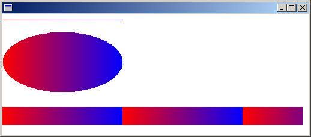
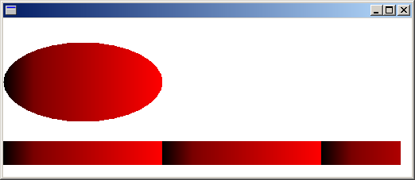
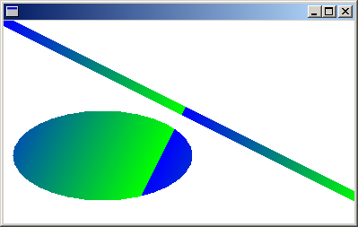

GDI+ provides horizontal, vertical, and diagonal linear gradients. By default, the color in a linear gradient changes uniformly. However, you can customize a linear gradient so that the color changes in a non-uniform fashion.
The following example uses a horizontal linear gradient brush to fill a line, an ellipse, and a rectangle:
LinearGradientBrush linGrBrush(
Point(0, 10),
Point(200, 10),
Color(255, 255, 0, 0), // opaque red
Color(255, 0, 0, 255)); // opaque blue
Pen pen(&linGrBrush);
graphics.DrawLine(&pen, 0, 10, 200, 10);
graphics.FillEllipse(&linGrBrush, 0, 30, 200, 100);
graphics.FillRectangle(&linGrBrush, 0, 155, 500, 30);
The LinearGradientBrush constructor receives four arguments: two points and two colors. The first point (0, 10) is associated with the first color (red), and the second point (200, 10) is associated with the second color (blue). As you would expect, the line drawn from (0, 10) to (200, 10) changes gradually from red to blue.
The 10s in the points (50, 10) and (200, 10) are not important. What's important is that the two points have the same second coordinate — the line connecting them is horizontal. The ellipse and the rectangle also change gradually from red to blue as the horizontal coordinate goes from 0 to 200.
The following illustration shows the line, the ellipse, and the rectangle. Note that the color gradient repeats itself as the horizontal coordinate increases beyond 200.

In the preceding example, the color components change linearly as you move from a horizontal coordinate of 0 to a horizontal coordinate of 200. For example, a point whose first coordinate is halfway between 0 and 200 will have a blue component that is halfway between 0 and 255.
GDI+ allows you to adjust the way a color varies from one edge of a gradient to the other. Suppose you want to create a gradient brush that changes from black to red according to the following table.
| Horizontal coordinate | RGB components |
|---|---|
| 0 | (0, 0, 0) |
| 40 | (128, 0, 0) |
| 200 | (255, 0, 0) |
Â
Note that the red component is at half intensity when the horizontal coordinate is only 20 percent of the way from 0 to 200.
The following example calls the LinearGradientBrush::SetBlend method of a LinearGradientBrush object to associate three relative intensities with three relative positions. As in the preceding table, a relative intensity of 0.5 is associated with a relative position of 0.2. The code fills an ellipse and a rectangle with the gradient brush.
LinearGradientBrush linGrBrush(
Point(0, 10),
Point(200, 10),
Color(255, 0, 0, 0), // opaque black
Color(255, 255, 0, 0)); // opaque red
REAL relativeIntensities[] = {0.0f, 0.5f, 1.0f};
REAL relativePositions[] = {0.0f, 0.2f, 1.0f};
linGrBrush.SetBlend(relativeIntensities, relativePositions, 3);
graphics.FillEllipse(&linGrBrush, 0, 30, 200, 100);
graphics.FillRectangle(&linGrBrush, 0, 155, 500, 30);
The following illustration shows the resulting ellipse and rectangle.

The gradients in the preceding examples have been horizontal; that is, the color changes gradually as you move along any horizontal line. You can also define vertical gradients and diagonal gradients. The following code passes the points (0, 0) and (200, 100) to a LinearGradientBrush constructor. The color blue is associated with (0, 0), and the color green is associated with (200, 100). A line (with pen width 10) and an ellipse are filled with the linear gradient brush.
LinearGradientBrush linGrBrush(
Point(0, 0),
Point(200, 100),
Color(255, 0, 0, 255), // opaque blue
Color(255, 0, 255, 0)); // opaque green
Pen pen(&linGrBrush, 10);
graphics.DrawLine(&pen, 0, 0, 600, 300);
graphics.FillEllipse(&linGrBrush, 10, 100, 200, 100);
The following illustration shows the line and the ellipse. Note that the color in the ellipse changes gradually as you move along any line that is parallel to the line passing through (0, 0) and (200, 100).

Â
Â